17/07/2001
17/07/2001
-
TRAKTAT O RELIGII PANUJĄCEJ NA KONTYNENCIE DMAN
Jak wiadomo na kontynencie Dman panuje Politeizm. Wydaje mi się, że oprócz podstawowych bóstw istnieje jeszcze kilka pomniejszych. Przykładem tej hipotezy jest miasteczko Sima , gdzie czci się siły natury i duchy zwierzęce. W całej mieścinie jest pełno posągów i totemów przedstawiających zwierzęcych bogów. Moim zdaniem, ta wioska nie jest jedynym miejscem praktykowania tych wierzeń. Podczas podróży po kontynencie spotkałem się z tym, że nawet w miastach poświęconych innym bogom mieszkańcy mają na domowych ołtarzykach posągi zwierząt.
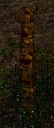 | 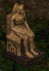 | 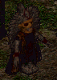 | 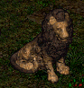 |
Głową kościoła w Dman jest Papież Wielu Bogów. Zasiada on na tronie Watykanu, który mieści się w Świętym Biskupstwie, w Jaken, w królestwie Aesh, w centralnej części kontynentu. Zadaniem papieża jest szerzenie wiary i nauk teologicznych, opiekowanie się historią oraz rozstrzyganie sporów między ludami trzech królestw.
Ludzie żyjący w Dman wierzą w życie pozagrobowe. Podstawą ich wiary jest Elohim - święta ziemia obiecana im przez bogów. Pochówek zmarłych nie odbiega zbytnio od nam znanego: papieża chowa się w katakumbach pod Watykanem, królów w kryptach i grobowcach, a zwykłych ludzi na cmentarzach. Co do ceremonii pogrzebowej nie dane mi jej było obejrzeć.
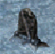 | 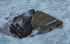 |
Największych bogów wyznaje się wszędzie. Czci nie oddaje im się w świątyniach, wprawdzie istnieją ich ołtarze, jednak są głównie umieszczone w miejscach odległych od osiedli ludzkich. Mieszkańcy Dman czczą ich w zaciszu własnego domu. Dość istotnym zasługującym na uwagę miejscem, które odwiedziłem podczas wędrówki po Dman jest wioska wyznawców Harassa, Tamu. Mroczne i niegościnne miejsce. Moim zdaniem ludzie stali się fanatykami religijnymi, gotowymi w imię Boga Zniszczenia poświęcić soje, jak i odebrać cudze życie.
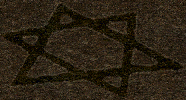 | 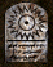 |
Miejsca czci bóstw opiekujących się żywiołami można spotkać we wszystkich trzech królestwach. Wydaje mi się, że te pięknie ozdobione rzeźbami ołtarze musiały powstać w starożytności, przed wojną bogów na pewno. Odważni śmiałkowie podobno przy odrobinie szczęścia mogą zawrzeć pakt z tymi bóstwami.
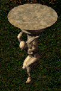 | 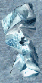 |
Miejscami związanymi z religią, które moim zdaniem należało by odwiedzić są: Farma Bogów i Szczątki bogów. Farma bogów została stworzona przez bogów by pomagać i leczyć ludzi. Kiedyś rosły tam podobno całe pola leczniczych ziół, jednak teraz zamieszkana jest przez straszliwe potwory. Legenda głosi, że kiedyś opiekował się nią wielki czarodziej Mainami, obecnie robi to jego przodek mędrzec Diphanui. Kolejnym miejscem wartym poświęcenia uwagi są Szczątki Bogów. Są to ostatnie pozostałości z czasów gdy bogowie chodzili po ziemi. To tu młody ksiądz Piach zaklął w kamień straszliwą broń z czasów wojny bogów, a mianowicie Giganta Galgadola.
Co do wierzeń innych rozumnych ras mam bardzo nikłe wiadomości. Domyślam się tylko, iż oddają cześć jakimś okrutnym bogom. Rzeczą dla mnie pewną jest to, że składają ofiary z ludzi.
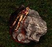 |